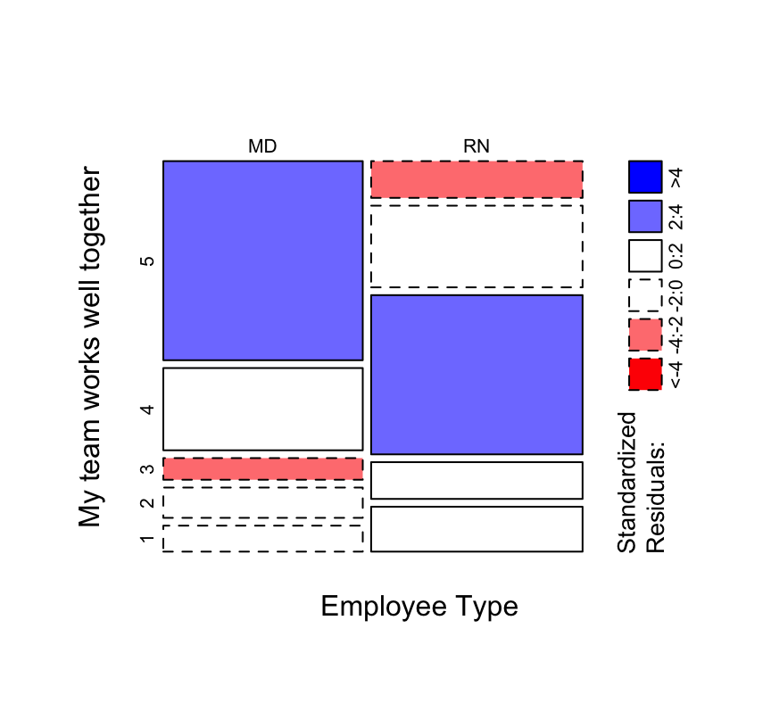
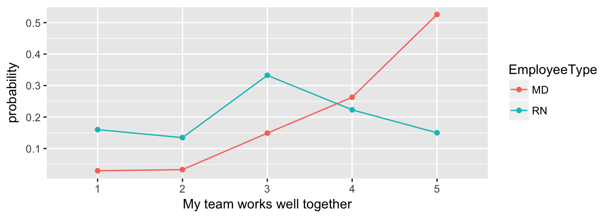

Chapter 6 Advanced analytics for ordinal scaled variables
6.1 \(\chi^2\) test
While Mann-Whitney-Wilcoxon (sometimes known as the Mann-Whitney U-test) is the test most often used with differences between ordinal distributions, there are other options that can tell you whether a measured difference between groups is statistical different.
The old stand-by in this case is the \(\chi^2\) test, which is often best visualized with a mosaic plot.
Figure 11. Chi-square test and mosaic plot between Employee Type and responses to the “My team works well together” question.

>
> Pearson's Chi-squared test with simulated p-value (based on 2000
> replicates)
>
> data: both2_tab
> X-squared = 52.809, df = NA, p-value = 0.0004998
6.2 Multinomial regression
The multinomial regression model is a more powerful (and more modern) version of the \(\chi^2\) test.
Figure 12. Multinomial regression between Employee Type and responses to the “My team works well together” question, with information-theoretic table for multi-model inference.

| Modnames | K | AICc | Delta_AICc | ModelLik | AICcWt | LL | Cum.Wt |
|---|---|---|---|---|---|---|---|
| Employee Type | 8 | 472.0249 | 0.00000 | 1 | 1 | -227.5680 | 1 |
| Null Model | 4 | 522.0647 | 50.03976 | 0 | 0 | -256.9118 | 1 |
6.3 Proportional-odds regression
If you can meet the assumptions, the proportional-odds regression is more powerful than the multinomial model, as it can take into account the ordered nature of the ordinal scale.
Figure 13. Proportional odds logistic regression between Employee Type and responses to the “My team works well together” question, with information-theoretic table for multi-model inference.

| Modnames | K | AICc | Delta_AICc | ModelLik | AICcWt | LL | Cum.Wt |
|---|---|---|---|---|---|---|---|
| Employee Type | 5 | 485.9008 | 0.00000 | 1 | 1 | -237.7686 | 1 |
| Null Model | 4 | 522.0647 | 36.16387 | 0 | 0 | -256.9118 | 1 |
If the concepts or ideas in this section are confusing, it’s probably worth consulting a statistician for help evaluating your data with these tools.